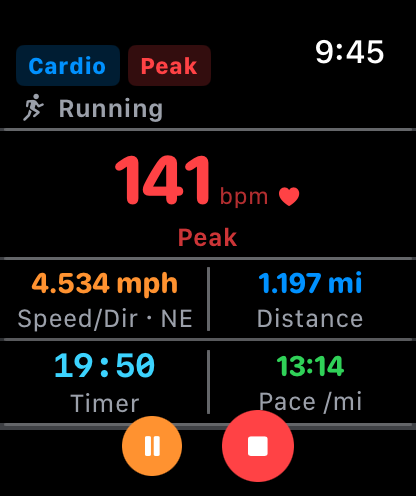
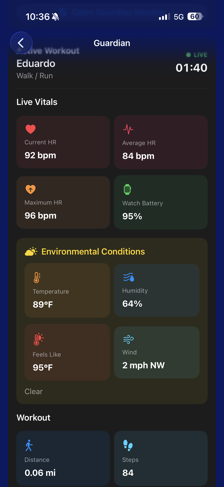
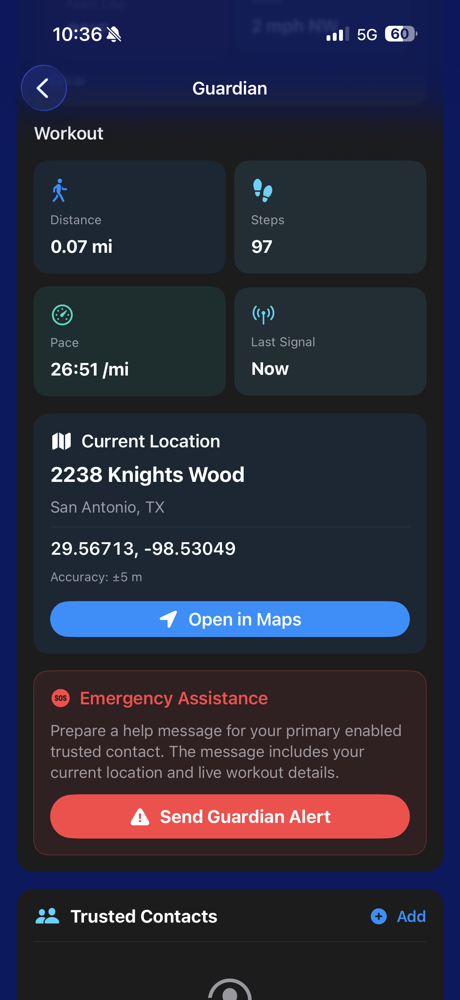
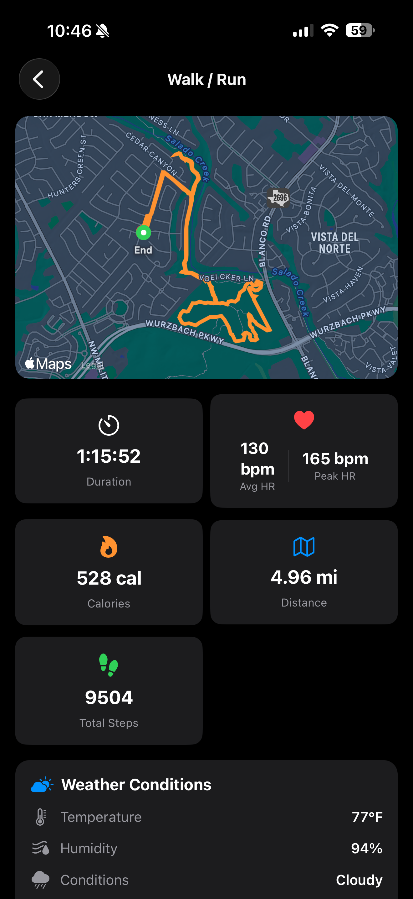
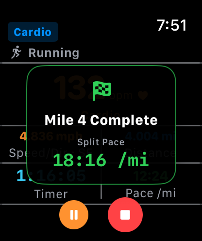
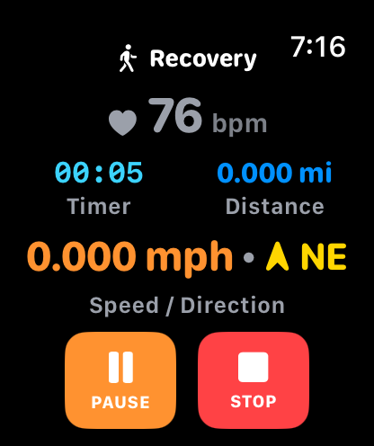
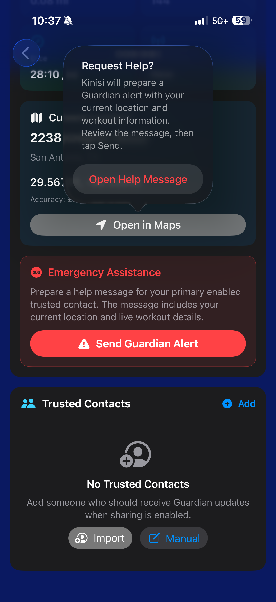
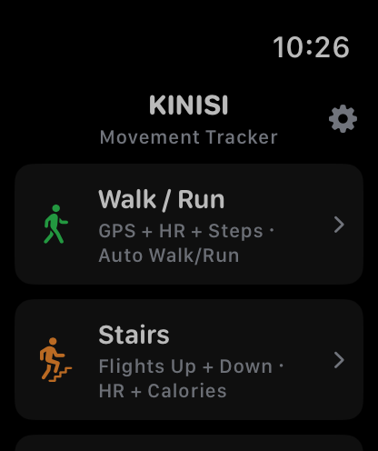

Live workout awareness
Trusted contacts see current workout status and key wellness information.
FITNESS & GUARDIAN SAFETY
Track every mile, understand every heartbeat, and share your workout in real time with the people who matter most.



KINISI GUARDIAN
Invite trusted family and friends to follow a workout in real time. Guardian can share live location, heart rate, pace, steps, battery status, weather, and workout progress while the athlete stays focused on the road ahead.
Trusted contacts see current workout status and key wellness information.
View the current position, street location, and open the route directly in Maps.
Send a Guardian Alert with workout and location context to enabled trusted contacts.
BUILT FOR THE FULL WORKOUT

See the path, distance, duration, pace, calories, steps, heart rate, and weather from an actual workout.

Receive an unmistakable mile-complete screen with split pace and haptic feedback.

Continue measuring after the workout ends to understand how quickly heart rate settles.

Request assistance from the people already chosen and enabled as trusted contacts.

Start Walk/Run, Stairs, Indoor Bicycle, Indoor Rower, or Sit-ups from the wrist.
REAL RESULTS. REAL SCREENS.
Kinisi turns workout data into a clear, readable summary. Review the route, pace, heart-rate zones, recovery, steps, weather conditions, and the details that help the next workout feel smarter.
KINISI FITNESS
Workout tracking for iPhone and Apple Watch, with Guardian safety built in.